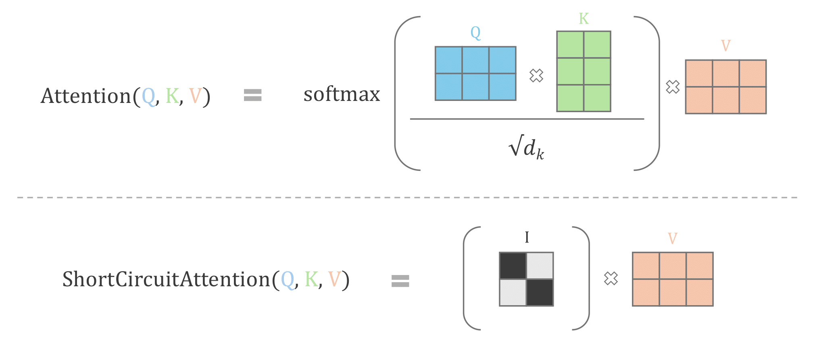

Analyzing Memorization in Large Language Models through the Lens of Model Attribution
Analyzing Memorization in Large Language Models through the Lens of Model Attribution – by Tarun Menta
Note: This blog post is a concise summary of our research paper.
You can read the full paper on arXiv for more details and a wider range of experimental results
Visit our project page to find code and more results!
Large Language Models (LLMs) have demonstrated immense success across a wide variety of applications. These models are trained on massive corpora of unlabelled text data, which is constructed from diverse sources, including but not limited to large-scale web scrapes, books and academic journals, code repositories, and many more.
These billion-parameter models are trained on trillions of text tokens, and have
been shown to memorize large amounts of the training data, and this data is now
verbatim extractable from the model through straightforward inference
methods.
[1] [2]
Why is this important? Despite various mitigation measures employed by practitioners, private information and copyrighted data often make their way into the training corpus, and are eventually memorized by the model. Verbatim extraction of such training data poses serious concerns around privacy and copyright infringement. What’s worse is that seeing a sample a single time during training has been shown to be enough for verbatim memorization by LLMs.
In our work, we investigate the role of the attention mechanism in various layers of LLMs on the phenomenon of verbatim memorization. Using a counterfactual approach, we quantify the impact of each attention layer to the memorization of training data, while also evaluating the impact on general capabilities of the model.
Defining Memorization in LLMs
Memorization in LLMs can be defined in a multitude of ways. For instance, memorizing well-known facts is a desirable characteristic of LLMs. The phenomenon we aim to study is ‘eidetic memorization’ (also known as photographic memory), wherein LLMs spuriously memorize training examples that it has seen only a few (or a single) time. Carlini et al. defines eidetic memorization as follows:
A string s is k-eidetic memorized (for k ≥ 1) by an LM fθ if s is extractable from fθ and s appears in at most k examples in the training data X:∣x∈X:s⊆x∣≤k
This type of spurious memorization is the main cause of privacy and copyright concerns, as private data which may have inadvertently ended up in training data can be memorized by the model, as opposed to well known facts or data which will inevitably occur many times in the large web-scraped training corpus. We collect a set of such training samples that are memorized by an LLM, wherein a sample is said to be memorized/extractable under the following setting:
Exact Match Memorization: A string having a prefix p of tokenized length lp and a suffix s of tokenized length ls such that the concatenated sequence (p∣∣s)∈D is a substring of some document in the training corpus is said to be memorized/extractable if the suffix can be recovered by prompting the LLM with the prefix under greedy sampling, i.e., GreedySampling(fθ,p)=s
Attribution through Counterfactuals
The attention mechanism is fundamental to transformer models, enabling them to understand context and manage long-range dependencies (Elhage et al., 2021). By dynamically weighing the significance of different words relative to each other, transformers capture nuanced meanings and relationships within data.
To measure the contribution of the attention mechanism in the phenomenon of memorization in LLMs, we followed a counterfactual approach, popularized by explainable AI methods. Counterfactual explanations aim to answer the following question to better understand the decision making process of models -
What would happen if input X was X′ instead?
The same question can be adapted to understand the contribution of different model components – including the attention mechanism that we are interested in. We tackle the following modified question, which serves as a proxy for the importance/contribution of the attention mechanism in each layer of the LLM -
In an LLM consisting of multiple transformer blocks, what would happen if the attention mechanism in the nth block was not present?
We devised a simple inference time modification that allows us to bypass (‘short-circuit’) the attention mechanism in any layer of an LLM. We then answer this question by analyzing the performance of this edited model
Attention Short-Circuiting
Given an input text sequence X,
the attention mechanism involves the following computations
Q=XWQ;K=XWK;V=XWVAttention(X)=Attention(Q,K,V)=softmax(sQKT)V
where WQ,WK,WV
are linear projections, and s
is a scaling factor.
Note - Multihead attention involves repeating the same attention computation with a set of H projection matrices, and combining the final output – increasing the expressive power of the model.
We can naively bypass the attention mechanism in any layer by setting the output to 0. However, this changes the output distribution of the layer, with undesirable adverse effects on later layers of the model (which use this as input) and leads to model collapse, producing gibberish text.
Instead, we ‘short-circuit’ the attention mechanism in the following way. The
power and flexibility of the attention mechanism comes from the attention
weights QKT
which enables the LLM to effectively model both short and long range
dependencies between any pair of words. By replacing these attention
weights with the identity matrix instead, we effectively bypass the core
computation of the attention mechanism, while retaining the output distribution
of the layer so that later layers remain relatively unaffected
ShortCircuitAttention(Q,K,V)=I.V
where I
is the identity matrix.

Pictorial description of attention short-circuiting
Experiments and Insights
We apply short-circuiting to the attention mechanism in each of the N layers of an LLM to produce N edited models. When short circuiting a particular layer, we apply the operation to all heads in the corresponding attention mechanism1. For each edited model (and the original un-edited model), we measure the following:
- Verbatim Memorization is measured as the percentage of samples which are exact match memorized by the model. We use a set of 15000 samples which were memorized by the original model2
- General Performance: Performance on multiple evaluation benchmarks to quantify the general capabilities of the model
This experiment yields the follwing observations:
- 🌟 Short-Circuiting in later layers - Applying short-circuiting to the attention mechanism in later layers (dark blue dots in the figure) of the model yields the most insightful results. We find that the resulting edited models retain high performance on downstream benchmarks, almost matching the original model, while showing a significant reduction in exact match memorization.
- Short-Circuiting in early layers - Applying short-circuiting to attention mechanism in early layers of the model leads to a complete breakdown in model capabilities. Though the memorization is 0, the model does not output coherent text, and fails to achieve any meaningful accuracy on benchmarks
We conducted experiments across 6 models, varying from 1B to 12B parameters, and 6 benchmarks including reasoning, language understanding, translation, and question answering tasks. We consistently observe the same phenomenon – When short circuiting attention layers in the last quartile of a model, the model still retains near-identical performance, while showing a significant reduction in eidetic memorization.
This is a very encouraging finding. By reducing memorization without degrading model performance, we contribute to developing more ethical and reliable LLMs suitable for real-world applications. Our targeted intervention strategy opens avenues for future research into architectural modifications that balance memorization and generalization, advancing responsible artificial intelligence technologies. We believe that this work opens the door to a multitude of interesting research avenues which we hope to actively pursue.
References
[1] Carlini, Nicholas, et al. “Extracting training data from large language models.” 30th USENIX Security Symposium (USENIX Security 21). 2021.
[2] Nasr, Milad, et al. “Scalable extraction of training data from (production) language models.” arXiv preprint arXiv:2311.17035 (2023).
-
Individually short-circuiting each attention head is computationally infeasible due to their large total number, and makes it harder to draw meaningful conclusions ↩︎
-
We include additional metrics of memorization in our paper – These are highly correlated with exact match memorization and yield similar insights ↩︎